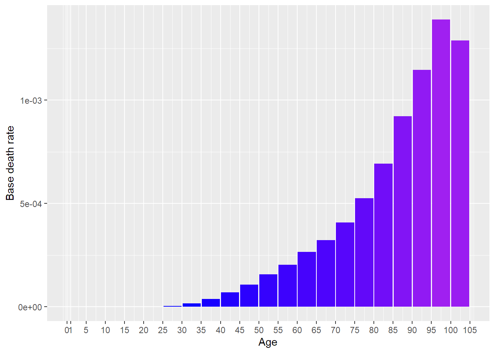
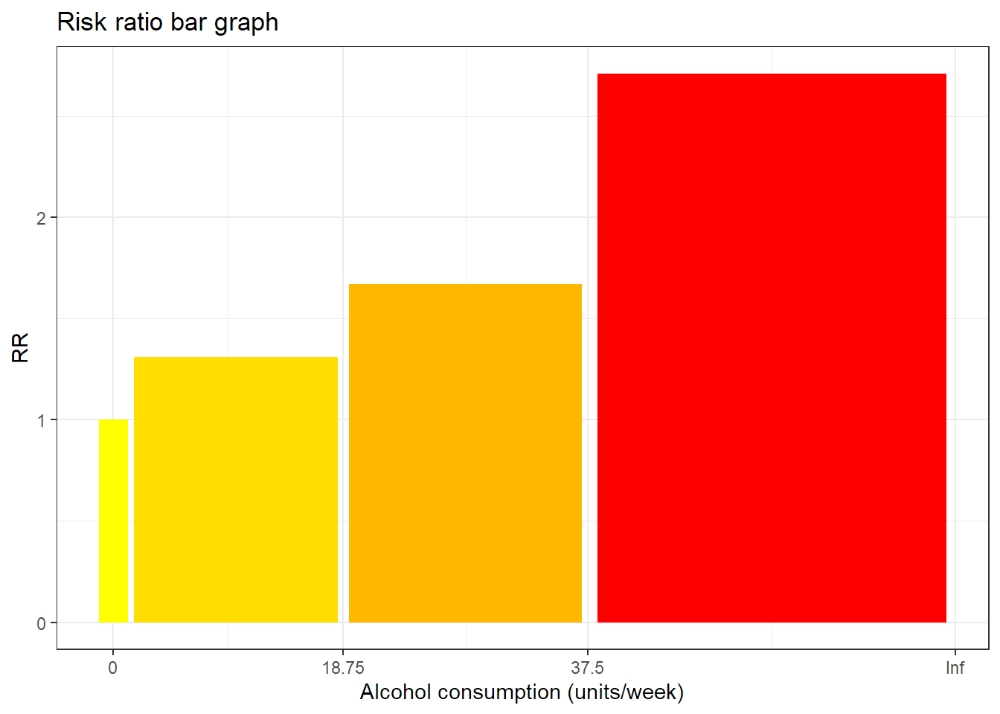
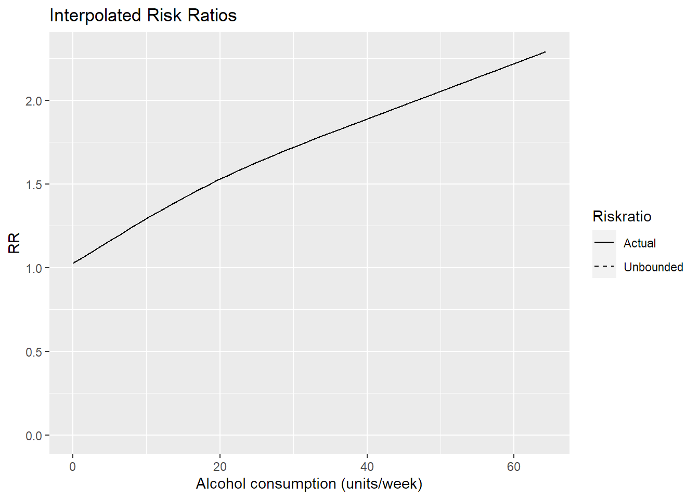
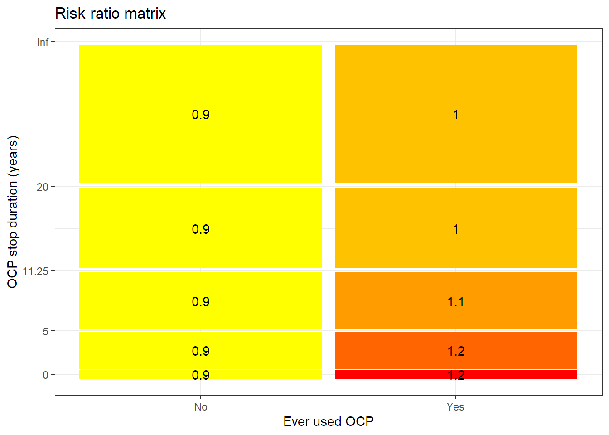
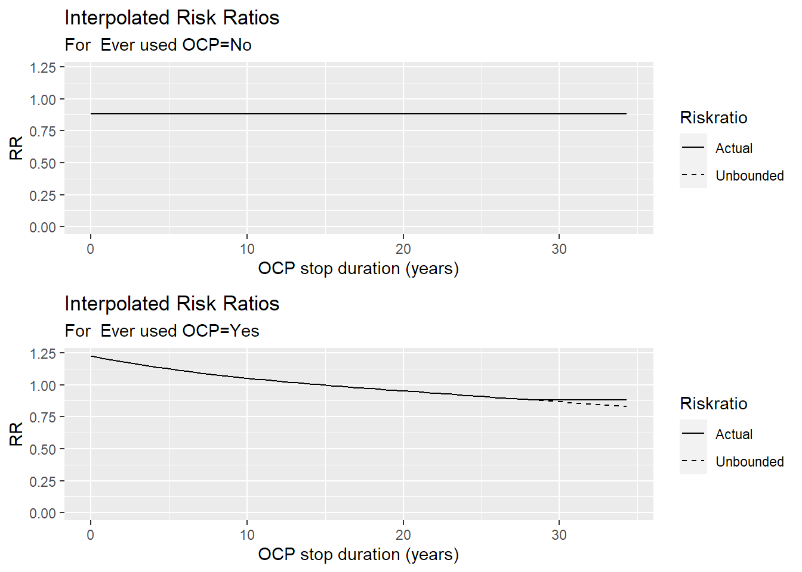
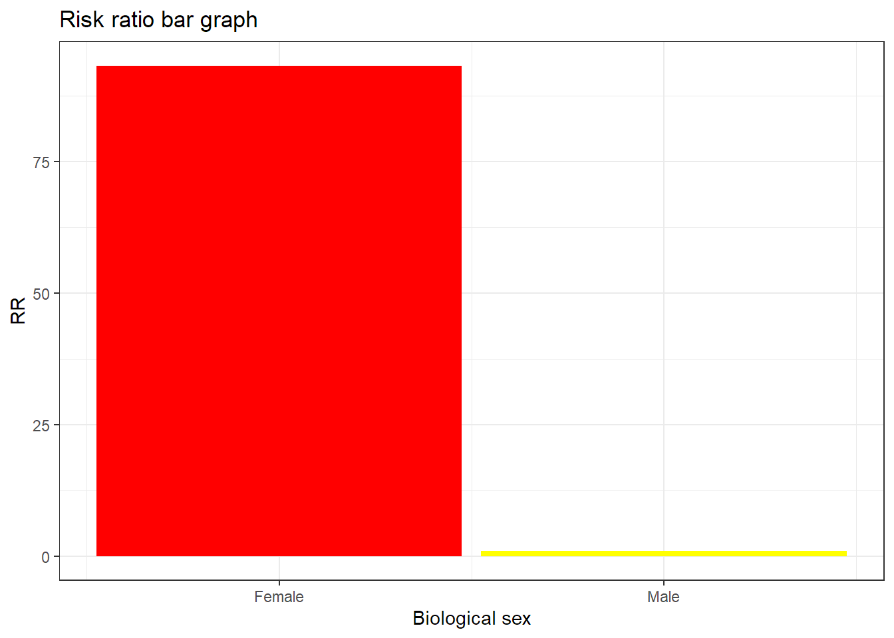

[auto-generated file]
Breast cancer is a death cause. It means that there is a certain probability that one dies from this.
In the model Breast cancer has the following risk factors
In 2014 Breast cancer was responsible for 1.59% of the deaths in the US. Below is a plot of how prevalent the death was for different ages (Xu et al. 2016)

The definition of dying from Breast cancer is to get any of the following ICD codes as the main cause of death on one’s death certificate. The percentage is the proportion of the deaths from Breast cancer who falls under the ICD code
The combined risk ratio of all risk factors is computed using the formula
\[ RR=RR_{\text{Alcohol}} \cdot RR_{\text{OCP ever,OCP end a.}} \cdot RR_{\text{Sex}} \]
The normalization factor is based on the joint distribution of all the risk factors and is computed using the formula
\[ P=P_{\text{Alcohol}} \cdot P_{\text{OCP end a.,Sex,OCP ever}} \]
Alcohol consumption is a risk factor for Breast cancer.
Below is a plot of the risk ratios we have taken from the literature (possibly adjusted to fit the model)

Because the variable Alcohol consumption is numeric, we have computed a smoothed approximation.

Ever used oral contraceptives and Time since taking OCP per year are a group of risk factors for Breast cancer.
Below is a plot of the risk ratios we have taken from the literature (possibly adjusted to fit the model)

Because the variable Time since taking OCP per year is numeric, we have computed a smoothed approximation for every value of the other variables.

Biological sex is a risk factor for Breast cancer.
Below is a plot of the risk ratios we have taken from the literature (possibly adjusted to fit the model)

“ICD Order Files 2014.” n.d. https://www.cdc.gov/nchs/icd/icd10cm.htm.
Xu, Jiaquan, Kenneth D Kochanek, Sherry L Murphy, and Betzaida Tejada-Vera. 2016. “Deaths: Final Data for 2014.” National Vital Statistics Reports 65 (4).